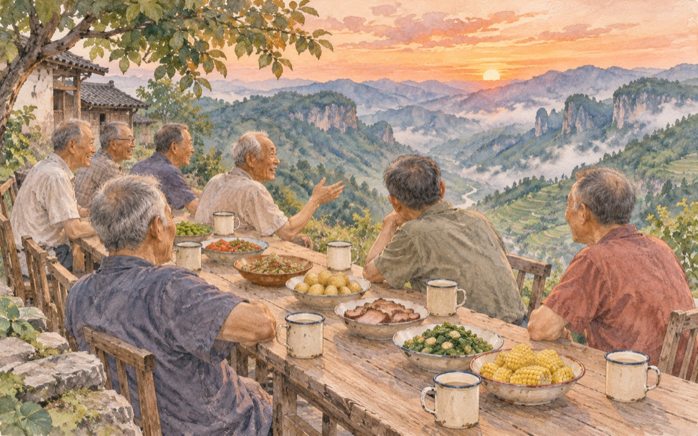

太和街村 · 雪岩顶 · 2025 年
宋兆军请老兵吃长桌宴

宋兆军在太和街村开民宿。2022 年八一建军节，他邀请来村里避暑的退役军人一起过节。各处来的客人在长桌旁坐下，唱起熟悉的军歌。这一请，就连着请了四年。
2025 年，宋兆军把聚会安排在雪岩顶。他带着 130 多位老兵去看日落，吃晚饭，还为他们准备了纪念品。孝感来的潘志军、郑绪忠拿着印有纪念文字的水杯，说起自己为什么愿意再来太和街，特意提到了小宋。
宋兆军自己没有当过兵。他告诉采访者，从小就敬重军人，如今民宿开在大家避暑的地方，终于有机会请老兵们好好过一次节。